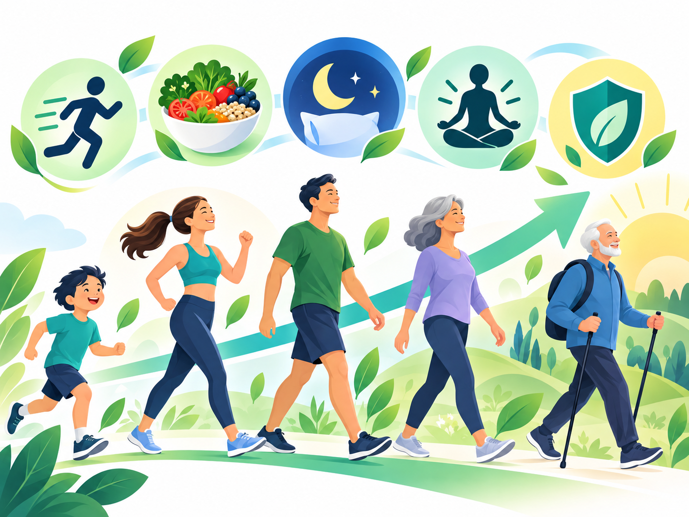
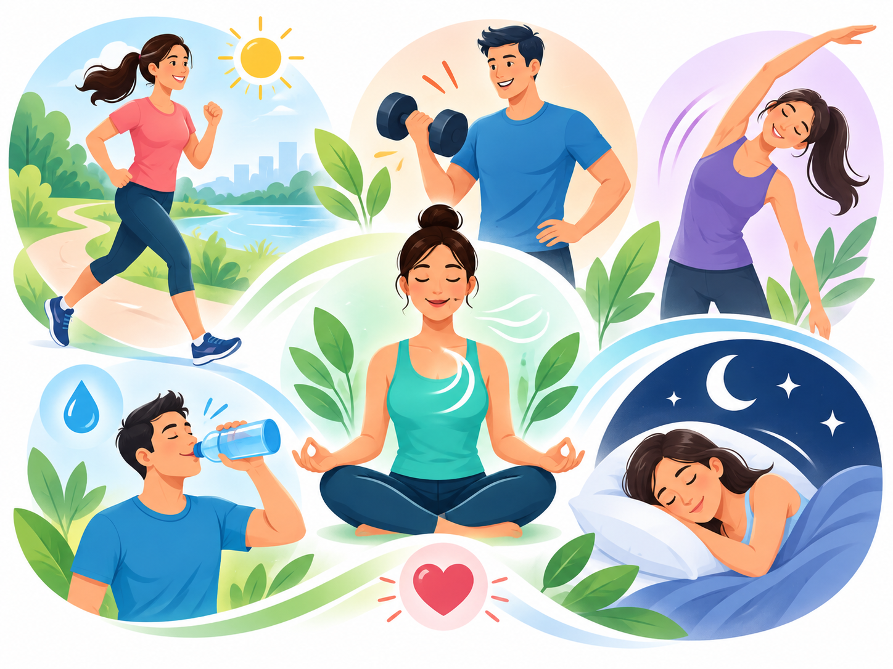

Miten solujen senesenssi muodostuu?
Solustressi
DNA-vaurio, oksidatiivinen stressi, telomeerien kuluminen, onkogeeninen signaali tai muu kuormitus voi käynnistää vasteen.
Jakautuminen pysähtyy
Solu aktivoi kasvua jarruttavia reittejä. Tämä voi estää vaurioitunutta solua lisääntymästä hallitsemattomasti.
Solun toiminta muuttuu
Aineenvaihdunta, geenien säätely, organellit ja solun viestintä voivat muuttua merkittävästi.
SASP-viestintä
Osa soluista erittää sytokiineja, kemokiineja, kasvutekijöitä ja kudosympäristöön vaikuttavia entsyymejä.
Kertyminen
Jos immuunijärjestelmän poisto ei riitä, pitkäikäisiä senesenttejä soluja voi kertyä enemmän iän ja kudosvaurion myötä.
Miten tämä liittyy ikääntymiseen?
Senesenttien solujen määrä ja niihin liittyvät merkit lisääntyvät monissa kudoksissa iän myötä. Eläinmalleissa niiden vähentäminen tai SASP-viestinnän vaimentaminen voi parantaa useita terveysmittareita. Ihmisillä tutkimus on edennyt kliinisiin kokeisiin, mutta tavalliseen terveydenhoitoon soveltuvaa yleistä solujen poistomenetelmää ei vielä ole.
Senesenssi ja SASP voidaan tunnistaa useiden biomarkkereiden yhdistelmällä tutkimusympäristössä.
Pitkittynyt senesenssi voi aiheuttaa kudoshaittaa eläinmalleissa.
Senolyyttisiä hoitoja tutkitaan pienissä ja sairauskohtaisissa kliinisissä kokeissa.
Tavallisen ruoan ei ole osoitettu poistavan ihmisestä senesenttejä soluja kliinisesti merkittävällä tavalla.
Tulehdus: tavoite ei ole nolla
Akuutti tulehdus on osa puolustusta, lihasharjoitteluun sopeutumista ja kudoskorjausta. Haitallinen kokonaisuus on pikemminkin pitkäkestoinen, matala-asteinen tulehdus, joka voi liittyä ikääntymiseen, aineenvaihdunnan häiriöihin ja moniin kroonisiin sairauksiin.
Miksi tämä kiinnostaa liikkujaa?

Lihastoiminta
Ikääntymiseen liittyvät tulehdus- ja solustressireitit voivat vaikuttaa lihaksen uusiutumiseen, voimantuottoon ja anaboliseen vasteeseen. Harjoittelu on yksi parhaiten tutkituista toimintakykyä säilyttävistä keinoista.
Palautuminen
Riittävä uni, energiansaanti ja harjoituskuorman rytmitys tukevat korjaavia prosesseja. Tavoite on rakentaa ympäristö, jossa kudos pystyy palautumaan toistuvasta kuormituksesta.
Metabolinen terveys
Liikunta, painonhallinta ja ruokavalion laatu tukevat insuliiniherkkyyttä, verenkiertoa ja kehonkoostumusta — tekijöitä, jotka liittyvät terveempään ikääntymiseen.
Arjen perusta
- Yhdistä kestävyysliikuntaa ja lihaskuntoharjoittelua viikoittain.
- Vältä pitkäkestoista paikallaanoloa ja lisää kevyttä liikkumista päivän sisään.
- Pidä uni säännöllisenä ja riittävänä.
- Suosi monipuolista ruokavaliota ja riittävää proteiinia harjoittelun sekä lihasmassan tueksi.
- Vältä tupakointia ja suojaa iho toistuvalta UV-vauriolta.
- Pidä paino ja vyötärönympärys yksilöllisesti terveellä alueella ilman äärimmäisiä dieettejä.
Mitä voi seurata itse?
Elämäntapamuutosta voi arvioida käytännön toimintakyvyn kautta. Neljän viikon seuranta antaa usein paremman kuvan kuin yksittäinen päivä.
kesto, heräämiset, aamuvirkeys
voima, toistot, vauhti, rasitustaso
lihaskipu, vire, leposyke
askelmäärä, keskittyminen, energiataso
Senolyyttiset hoidot ovat vielä tutkimusaluetta
Senolyytit ovat yhdisteitä, joiden tavoitteena on poistaa valikoivasti senesenttejä soluja. Dasatinibin ja kversetiinin yhdistelmällä on saatu pienessä ihmisillä tehdyssä pilottitutkimuksessa biologisia muutoksia senesenssimarkkereissa. Tulosta ei kuitenkaan voi siirtää sellaisenaan ravintolisään tai ruokamäärään, eikä reseptilääkettä pidä käyttää tähän tarkoitukseen ilman kliinistä tutkimusasetelmaa.
Tutkimuslähteet
- National Institute on Aging: Does cellular senescence hold secrets for healthier aging? — perusmekanismi, hyödylliset ja haitalliset roolit.
- Wang B. ym. Nature Reviews Molecular Cell Biology (2024): The senescence-associated secretory phenotype and its physiological and pathological implications.
- SenNet Biomarkers Working Group, Nature Reviews Molecular Cell Biology (2024): suositukset senesenttien solujen tunnistamiseen eri kudoksissa.
- McHugh D. ym. Nature Reviews Drug Discovery (2025): Senescence as a therapeutic target in cancer and age-related diseases.
- Chronic inflammation and the hallmarks of aging (2023).
- Age-associated inflammation and implications for skeletal muscle responses to exercise (2023).
- Exercise-induced inflammatory and metabolic adaptations in ageing: meta-analytic compendium (2026).
- Hickson L.G. ym. EBioMedicine (2019): alustava kliininen D+Q-senolyyttitutkimus.